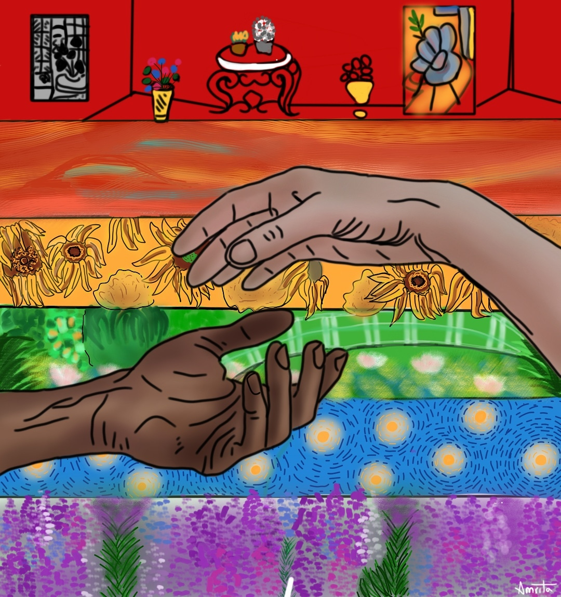
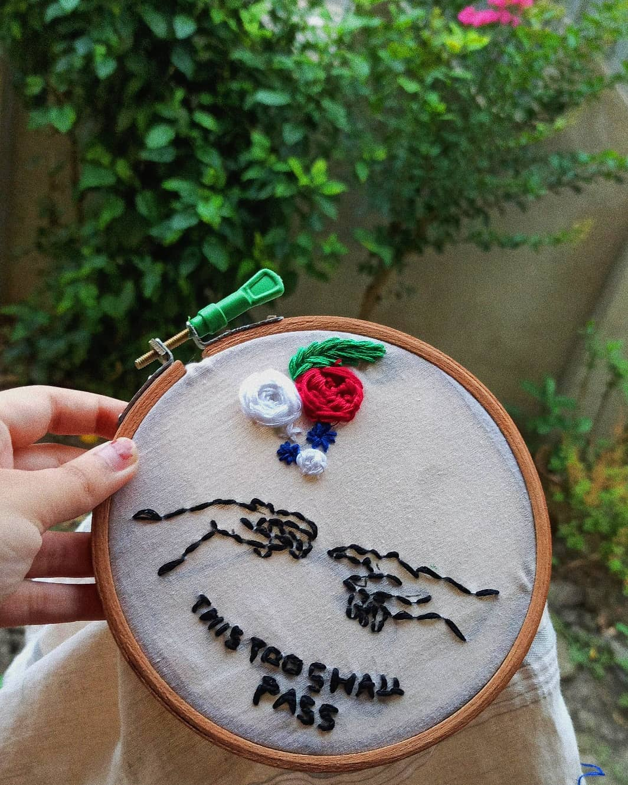
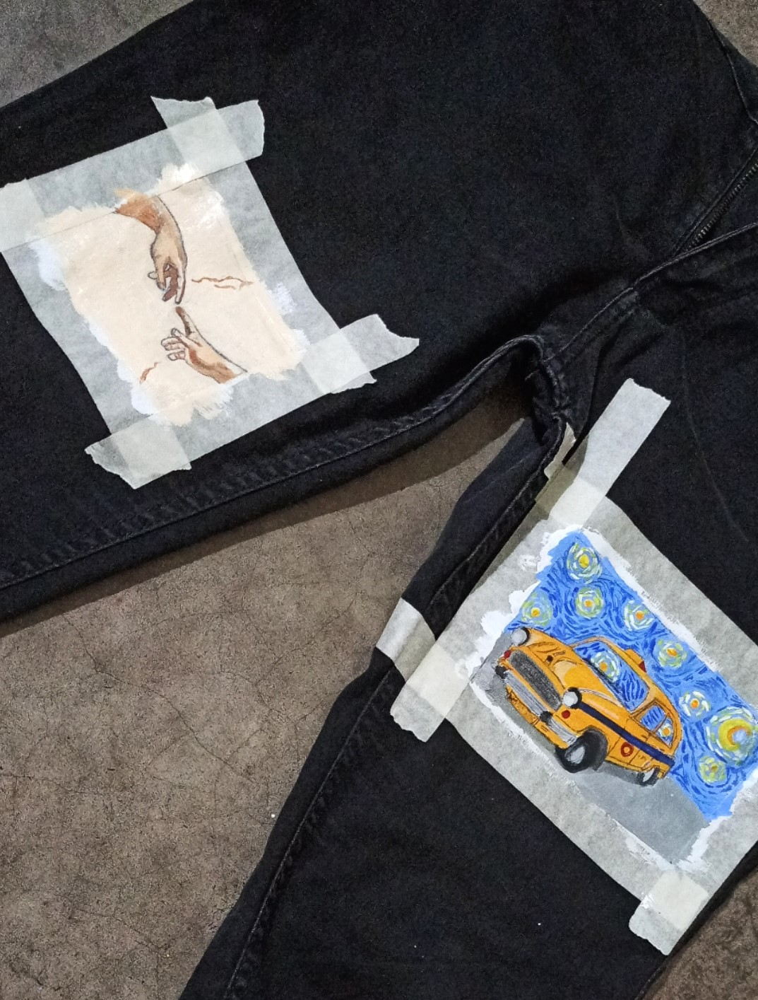

Hi, welcome to the fun part, where i show you what all i do. I've been always influenced by art, irrespective of genres or mediums. It's a very therapeutic zone for me, and makes me calm and happy. So i dedicate some time every day to paint or sketch.
I have not taken any formal classes and it's a challenge, fun one to teach myself new techniques each day.
To simplify, i work on:
~painting on unconventional materials
~digital art(movies and crossovers)
~self portraits
I have not taken any formal classes and it's a challenge, fun one to teach myself new techniques each day.
To simplify, i work on:
~painting on unconventional materials
~digital art(movies and crossovers)
~self portraits
1 / 10
Three Girls
2 / 10
Rheumatoid Arthritis
3 / 10
Empty
4 / 10

Yellow
5 / 10
Pather Panchali
6 / 10
Joker in Picasso's blue era
7 / 10
Dead Poet's Society
8 / 10
Bollywood in Rene Magritte's style
9 / 10
Satyajit Ray
10 / 10

Pride
So the above pieces include my self portraits, some recreation of movie scenes and the pride art i made for 2020!
As i said, i like to work on unconventional materials as well and i've spent every day of the past 4 months painting or creating some art of the other:). When i see things like an empty matchbox or a glassjar or coasters lying around, i get an uncontrollable urge to paint on them. I taught myself embroidery in this lockdown. I also painted on an old pair of black jeans!
So i present some of them to you.
As i said, i like to work on unconventional materials as well and i've spent every day of the past 4 months painting or creating some art of the other:). When i see things like an empty matchbox or a glassjar or coasters lying around, i get an uncontrollable urge to paint on them. I taught myself embroidery in this lockdown. I also painted on an old pair of black jeans!
So i present some of them to you.

Spark of life Embroidery
Paintings of Bengal on Coasters
Starry Night Embroidery

Facepainting
CD,Blouse,Jar,Teacup

Calcutta taxi, spark of life on Jeans
Gogh on Matchboxes

Sunflowers on Jeans pocket
Shohoj Path on Earthern Tea Cup/Bhnaar
So, with this we embrace the end. But i can say that i have got more to me and that you have got more to see. Thank you for embarking on this ship of my art. Hope you enjoyed. You may contact me for any details. I am also mentioning my instagram account.
This page might end here, but art never does, so see you soon again!
Head over to my instagram:
This page might end here, but art never does, so see you soon again!
Head over to my instagram: